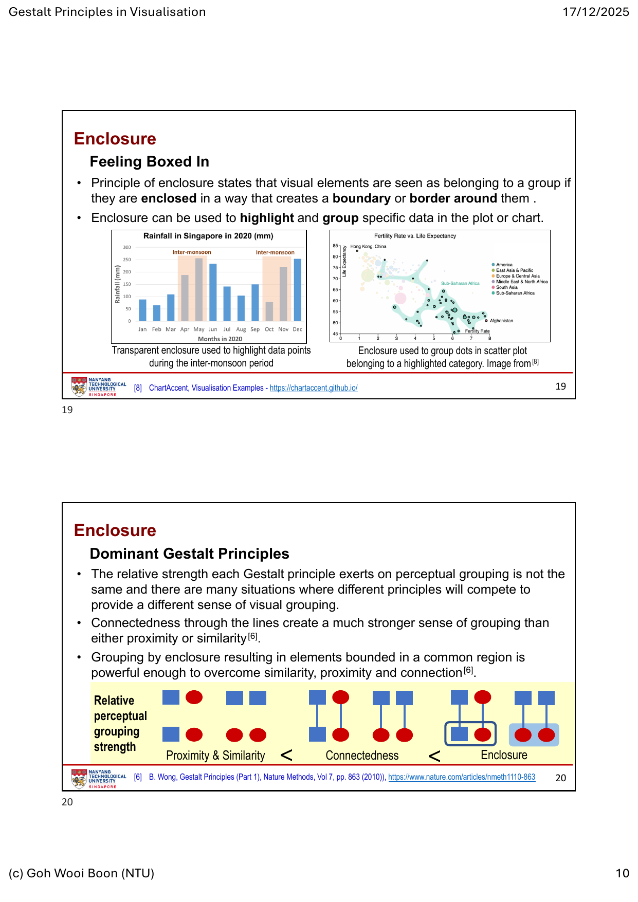
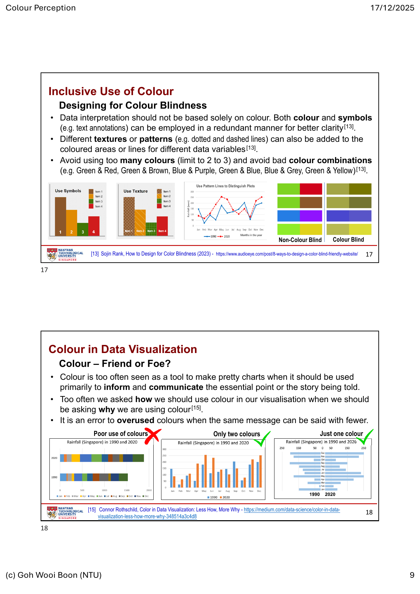
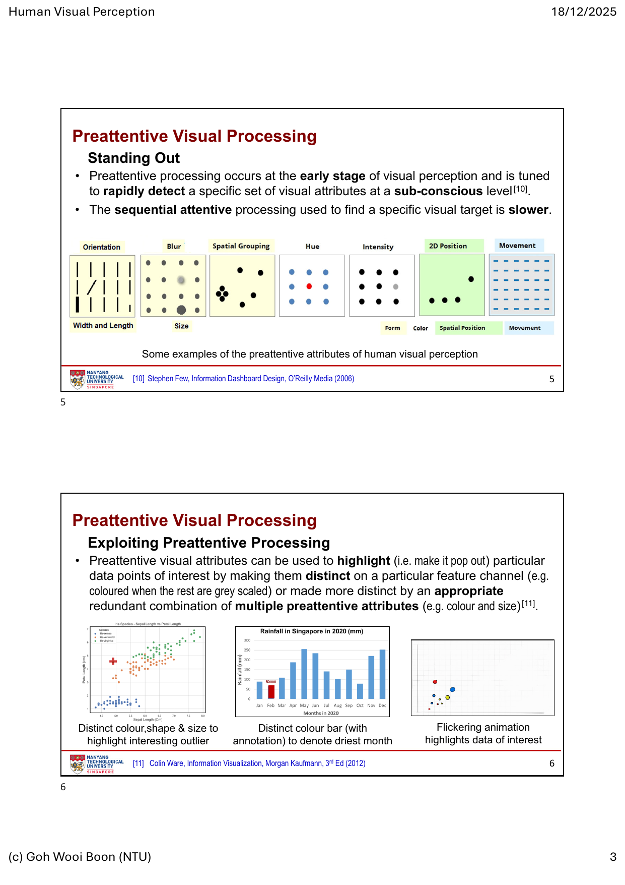
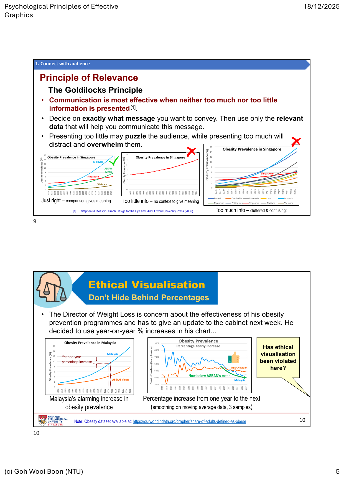

感知与有效图形
第三周把重点从“图表能画什么”推进到“人为什么会这样读图”。通过 Gestalt 分组、色彩、前注意加工与心理学原则，学习让关键关系被快速、准确且公平地看见。
必须掌握的术语
| 术语 | 准确理解 |
|---|---|
| Gestalt principles | 人脑会自动把视觉元素组织成整体的规律；在可视化中，间距、相似性、连线、边界和前景/背景都在传达“哪些东西相关”。 |
| proximity / similarity / connectedness | 接近、相似与连通会产生分组感。连线通常比接近或相似更强；不要让无关元素意外看起来属于同一组。 |
| enclosure / figure-ground | 共同边界会把元素视为一组；前景—背景分离决定读者是否能先看见真正重要的数据。 |
| HSL / HSV | 以 hue（色相）、saturation（饱和度）和 lightness/value（明度/亮度）描述颜色，比 RGB 更适合作为配色设计语言。 |
| categorical / sequential / diverging palette | 类别色盘用于无序分组；顺序色盘以明度或饱和度表达等级；发散色盘用于围绕有意义中点的正负偏离。 |
| preattentive processing | 视觉系统在有意识搜索前，快速发现位置、颜色、长度、方向、大小、形状、运动等显著差异的能力。 |
| conjunction search | 同时依赖两个以上属性寻找目标，例如“绿色椭圆”；通常比单一属性的前注意搜索慢。 |
| Weber’s law / JND | Just Noticeable Difference（最小可觉差）随原始刺激强度增加而增加；数值越大，要看出差异往往需要更大的绝对变化。 |
| Kosslyn’s Eight-Fold Way | 八项有效图形原则：relevance、appropriate knowledge、salience、discriminability、perceptual organisation、compatibility、information changes、capacity limitation。 |
核心知识
3.1 Gestalt Principles in Visualisation｜先让关系被正确分组
本章图表 / 方法：散点图中的点群与突出显示、带注释的柱状图、网络图、violin plot、仪表盘式界面。核心不是增加图形类型，而是控制间距、属性、连线、边界与背景，使分组含义与数据关系一致。
我们是用大脑而不是眼睛“看”图。proximity 让靠近的点被视为一组；similarity 让同色、同形、同方向或同尺寸元素被联结；simplicity 要求排序并移除不必要的背景和轴，让结构更容易读出。相反地，故意制造不相似可把异常值或重点拉到前景。
connectedness 适合表达数据点之间确有关系或连续变化，但不应把无关项目用线“绑”在一起；continuity 让网络或流程的连线尽量平滑、少急转；symmetry 可帮助阅读 KDE 的分布形状，例如 split violin plot 比较两个群体。figure-ground 则要求主要信息与背景具有足够分离，避免网格、装饰或低对比文字抢走注意力。

设计检查：读者是否能在不读图例的情况下看出谁属于同一组？若答案依赖“它们刚好靠得近”，就检查间距是否误导；若用边框或底色分组，保持边界简洁，别把每一块都做成视觉卡片。
3.2 Colour Perception｜让颜色承担明确任务
本章图表 / 方法：类别柱状图、顺序热力图、以 0 为中心的发散色图、带线型/纹理的折线图、配色可访问性检查。颜色用于区分、排序、比较、探索与叙事，而不是装饰。
颜色会受相邻背景影响（课件以 Bezold effect 说明同一颜色可显得不同），因此不能只在色板上选色，必须在真实背景、文字、网格与数据密度中检查。对设计而言，HSL / HSV 更直观：色相用于类别区分；饱和度表示鲜明程度；明度或 value 用于表达由低到高的数量层级。
映射必须匹配数据尺度：nominal 数据优先变化色相，获得清楚的类别对比；ordinal 数据优先保持同一色相、变化明度或饱和度，体现顺序；当数据围绕 0、目标值或平均值两侧变化时，用发散色盘并明确中点。类别多时先减少颜色数量；相似数据用统一色，只有需要比较或强调的部分才用对比色。

包容性不是可选项。不要让读者必须区分红/绿才理解结论；颜色之外加直接标注、形状、虚线或纹理。避免过多颜色和低区分组合，尤其是绿—红、绿—棕、蓝—紫、绿—蓝、蓝—灰、绿—黄。高风险结论须在灰阶和色觉缺陷模拟中仍能读懂。
3.3 Human Visual Perception｜把注意力给真正重要的地方
本章图表 / 方法：强调异常点的散点图、带直接注释的柱状图、dot plot、条形图、bubble chart、参考网格与叠加曲线。它们分别用于快速发现、精确比较、量级判断和细微变化判断。
前注意加工能在很短时间内发现一个不同的颜色、方向、位置、大小、长度、模糊度或运动。可视化应把这种“跳出来”的能力留给最重要的点：其余元素退为灰色，把例外用高对比色、尺寸或直接标注强调。不要同时制造很多抢眼元素，否则没有任何元素真正突出。

人对长度的量级判断通常比对面积或体积准确，所以同一比较任务中，bar chart 往往比 bubble chart 更可靠。课件进一步指出，面积和体积易被低估；这正是“好看”的圆泡图不应替代长度编码的原因。若不能避免面积编码，必须谨慎说明尺度与限制。
Weber’s law 解释了为什么大值之间相同的绝对差异更难看见，也解释了参考网格的价值：网格缩短了正在比较的基准长度，使高低和小变化更容易辨认。但网格只应提供判断锚点，不能喧宾夺主。最后，Titchener、Müller-Lyer、Hering、Adelson 等错觉提醒我们：上下文会改变对长度、大小、颜色和对齐的判断，因此避免 3D、透视和会扭曲尺度的装饰。
3.4 Psychological Principles of Effective Graphics｜用心理学约束设计判断
本章图表 / 方法：对比折线图、排序条形图、饼图与 3D 图的重设计、趋势与预测区间的分段折线、受众导向的图表选择。它们用来检验信息取舍、显著性、可辨性、图形—语义匹配和认知负担。
开始画图前先确定三件事：目的、受众、图表类型。视觉设计有审美成分，但数字和测量的表达也有可检验的科学约束。Kosslyn 将八项原则归为三个目标：连接受众、引导注意、促进理解与记忆。

连接受众：relevance 要求只保留传达讯息所需的信息，避免太少没有语境、太多造成负担；appropriate knowledge 要求图表语言、符号和复杂度匹配受众已有知识。金融读者熟悉的 candlestick chart，对一般读者未必是可读的首选。
引导注意：salience 要把最大的可感知差异留给主结论；discriminability 要让对象和背景、类别之间差异大到足以分辨；perceptual organisation 则把 3.1 的 Gestalt 分组用于比较和记忆。寻找“第三大”的任务中，排序条形图通常比饼图更好；3D 柱会遮挡并扭曲长度判断，不能只因醒目就使用。
促进理解与记忆：compatibility 要求形式与含义匹配——连续变化用折线、离散实体用柱，颜色和高度也要符合读者直觉；information changes 要求视觉属性的改变确实表示数据或语义的改变，例如把 forecast 与 historical 用不同线型或颜色清楚区隔；capacity limitation 提醒我们，读者同时能稳定保持的感知组有限，课件建议不要让其一次处理超过约四组。
常见错误
- 无意中用距离、相似色或边框把不相关元素分成一组；或用大量卡片、边框和底色压过数据本身。
- 把颜色当装饰：用彩虹色表示无序数值、用顺序色表示无序类别，或在红绿区分失效时让结论消失。
- 把所有项目都加粗、高饱和、动画化，结果没有真正的视觉重点；把需要搜索的目标编码成慢速 conjunction search。
- 用面积、体积、3D 透视或截断/压缩尺度做精确比较，却没有承认其感知误差。
- 为“更简洁”删掉必要的基准或比较对象，或为“更全面”塞进过多类别、图例与认知负担。
- 用颜色、线型或形状的变化制造视觉戏剧性，却没有对应的数据或语义变化，误导读者把样式当证据。
练习
找一张含图例、分组和多个标注的图，分别指出 proximity、similarity、connectedness、enclosure 与 figure-ground 在传达什么关系。再改一处会让读者错误分组的设计，并解释为什么。
任选一个含类别、等级、正负偏差三种变量的数据集，分别设计 categorical、sequential、diverging 色盘。检查灰阶和色觉缺陷情境；至少在一处加入非颜色的冗余编码。
画一张含 30 个点的散点图，先用统一样式，再只用一个前注意属性突出异常点，最后用两个冗余属性突出它。比较三张图的速度、噪音与误读风险。
将同一组类别值画成 bar chart 与 bubble chart。请三位读者估计两组数值的倍数关系，记录误差；用长度、面积和 Weber’s law 解释结果。
选择一张真实新闻图或仪表盘，按 relevance、appropriate knowledge、salience、discriminability、perceptual organisation、compatibility、information changes、capacity limitation 各写一条判断。最后提出一个不改变数据、但能提高诚实性与可读性的重设计。